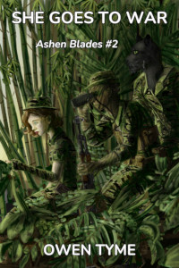

Ashen Blades
This series centers around the life of a half-demon girl that calls herself the Hunter, whose parents were murdered by demons. Joining her crusade against demon-kind are the Ashen Blades, also known as the Order of Ash and Smoke, an organization of demon hunters.
The Hunter starts out with demon powers only, but eventually learns that she’s also a witch, because her mother was a witch before she became a demon. In She Goes to War, she gains an unwanted connection to an elemental spirit that draws in others like it, starting a secondary war she doesn’t want, just so she can retain her sanity (such as it is) and humanity.
She’s effectively mute, cursed by her nemesis to only be able to say, “It’s a secret.” Therefore, she expresses herself in very physical ways and has a fondness for offensive gestures.
She’s also beyond tenacious and absolutely never gives up, to the point of bordering on or fully crossing into the realm of insanity. In truth, the psychological makeup of a half-demon isn’t particularly stable and later works reveal that she effectively has two personalities, one representing her witch side, while the other represents her demonic heritage. Fortunately for the world, her human side is normally the one in the driver’s seat.
The series starts out in 1940’s New York City, but decades pass between each story, because the Hunter has the unlimited lifespan of a demon and the series doesn’t stay in New York, though the Hunter is a New Yorker to her core.
She Hunts Demons
 Volume one
of Ashen Blades is She Hunts
Demons.
Volume one
of Ashen Blades is She Hunts
Demons.
It follows the misadventures of the Hunter and her private detective partner, Clayton Simmons, as they investigate a murder and a string of financial crimes brought to their attention by a demon pretending to be a crying widow.
Little do they know, but Otto Vogerath, the very same demon that murdered the Hunter’s parents, had the evidence hand-delivered to them. They fall right into his web of lies and his grand game that’s played with all of humanity at stake.
Along the way, the Hunter finally realizes the truth of her own past and comes to recognize Vogerath as her arch-nemesis, giving her personal crusade a focus, with a face and name.
Unfortunately for her, Vogerath has plans of his own and claims to have arranged for the Hunter’s birth, because he needs the power of a half-demon to fulfill his nefarious plans.
Here’s an audio sample of this novel:
She Goes to War
 Volume two of Ashen Blades is She Goes to War, in which the Hunter feels drawn to Vietnam, in 1972, certain her nemesis has returned to Earth.
What follows is a wild ride through a war zone as she tracks Vogerath down, magically tugged in a particular direction, but just as everyone else that fought in the war experienced, nothing goes according to plan and the moment she touches down in the jungle, her animal instincts take over, because the Spirit of the Jungle itself takes offense at her mere presence.
Her own team, led by her partner, Clayton Simmons, are forced to track her down and knock some sense into her.
The Hunter doesn’t know it, but Vogerath summoned her to Vietnam with the intent of using her to weaken his master, all so he can be free of the demonic pact of slavery he’s been stuck with since the previous book.
She Goes to Summer Camp
 Included
with She Goes to War is the novella
She Goes to
Summer Camp, which details the misadventures of the Hunter as she
goes undercover in 1986 as a teenager at Camp Sapphire Friendship, a
summer camp for teens that’s infested with demons.
Included
with She Goes to War is the novella
She Goes to
Summer Camp, which details the misadventures of the Hunter as she
goes undercover in 1986 as a teenager at Camp Sapphire Friendship, a
summer camp for teens that’s infested with demons.
Her team soon discover the demons are the least of their troubles, because the camp’s owner and operator, Miss Macie Weber, is an unknowing and delusional untrained witch, who’s haywire magic threatens to summon angry elemental spirits to camp.
The Hunter has had the Jungle Spirit stuck inside her head since 1972 and stopping the summoning becomes a primary concern, because if the spirits show up, they’ll seek to punish her for holding their sister captive.
She Goes to Summer Camp is also available on its own in paperback or as a free Ebook. If you want to try a taste of this series for free, why not pick up the Ebook?
Demon for President!
 Volume
three of Ashen Blades is Demon for
President!, in which is Vogerath returns to Earth with a new power
to charm just about anyone that senses him, so long as they’re willing
to at least listen.
Volume
three of Ashen Blades is Demon for
President!, in which is Vogerath returns to Earth with a new power
to charm just about anyone that senses him, so long as they’re willing
to at least listen.
He runs for President of the United States on the 2024 ticket, first as a Republican and then also as a Democrat, using his demonic power to be in many places at once to convince the American public he’s a pair of brothers.
Naturally, the Hunter and her team do all in their power to kill him, but for every body they get rid of, he has many more hidden away.
The public are soon eating out of his hand and willing to believe anything he says, because the magic he pumps out through television broadcasts leaves them susceptible to his every suggestion.